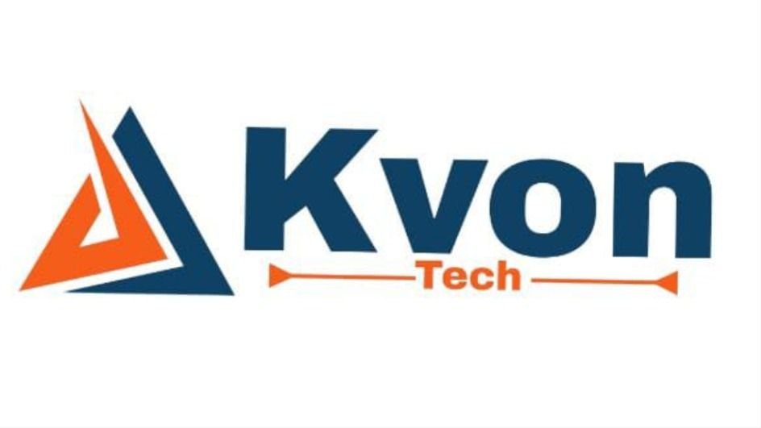

Chittor Fort
Kvon Tech Services Private Limited, founded in May 2024, is a cutting-edge provider of IT solutions with a focus on enabling businesses in the digital age through customized software and cloud services. The company provides a broad range of technological expertise, including software development, digital marketing, DevOps services, and AI/ML solutions.Kvon Tech Services Private Limited, founded in May 2024, is a cutting-edge provider of IT solutions with a focus on enabling businesses in the digital age through customized software and cloud services. The company provides a broad range of technological expertise, including software development, digital marketing, DevOps services, and AI/ML solutions.Kvon Tech Services Private Limited, founded in May 2024, is a cutting-edge provider of IT solutions with a focus on enabling businesses in the digital age through customized software and cloud services. The company provides a broad range of technological expertise, including software development, digital marketing, DevOps services, and AI/ML solutions.Kvon Tech Services Private Limited, founded in May 2024, is a cutting-edge provider of IT solutions with a focus on enabling businesses in the digital age through customized software and cloud services. The company provides a broad range of technological expertise, including software development, digital marketing, DevOps services, and AI/ML solutions.
Kvon Tech Services Private Limited, founded in May 2024, is a cutting-edge provider of IT solutions with a focus on enabling businesses in the digital age through customized software and cloud services. The company provides a broad range of technological expertise, including software development, digital marketing, DevOps services, and AI/ML solutions.Kvon Tech Services Private Limited, founded in May 2024, is a cutting-edge provider of IT solutions with a focus on enabling businesses in the digital age through customized software and cloud services. The company provides a broad range of technological expertise, including software development, digital marketing, DevOps services, and AI/ML solutions.Kvon Tech Services Private Limited, founded in May 2024, is a cutting-edge provider of IT solutions with a focus on enabling businesses in the digital age through customized software and cloud services. The company provides a broad range of technological expertise, including software development, digital marketing, DevOps services, and AI/ML solutions.Kvon Tech Services Private Limited, founded in May 2024, is a cutting-edge provider of IT solutions with a focus on enabling businesses in the digital age through customized software and cloud services. The company provides a broad range of technological expertise, including software development, digital marketing, DevOps services, and AI/ML solutions.
Kvon Tech Services Private Limited, founded in May 2024, is a cutting-edge provider of IT solutions with a focus on enabling businesses in the digital age through customized software and cloud services. The company provides a broad range of technological expertise, including software development, digital marketing, DevOps services, and AI/ML solutions.Kvon Tech Services Private Limited, founded in May 2024, is a cutting-edge provider of IT solutions with a focus on enabling businesses in the digital age through customized software and cloud services. The company provides a broad range of technological expertise, including software development, digital marketing, DevOps services, and AI/ML solutions.Kvon Tech Services Private Limited, founded in May 2024, is a cutting-edge provider of IT solutions with a focus on enabling businesses in the digital age through customized software and cloud services. The company provides a broad range of technological expertise, including software development, digital marketing, DevOps services, and AI/ML solutions.Kvon Tech Services Private Limited, founded in May 2024, is a cutting-edge provider of IT solutions with a focus on enabling businesses in the digital age through customized software and cloud services. The company provides a broad range of technological expertise, including software development, digital marketing, DevOps services, and AI/ML solutions.
This is the illustration of outline offset.
Kvon Tech Services Private Limited, founded in May 2024, is a cutting-edge provider of IT solutions with a focus on enabling businesses in the digital age through customized software and cloud services. The company provides a broad range of technological expertise, including software development, digital marketing, DevOps services, and AI/ML solutions.Kvon Tech Services Private Limited, founded in May 2024, is a cutting-edge provider of IT solutions with a focus on enabling businesses in the digital age through customized software and cloud services. The company provides a broad range of technological expertise, including software development, digital marketing, DevOps services, and AI/ML solutions.Kvon Tech Services Private Limited, founded in May 2024, is a cutting-edge provider of IT solutions with a focus on enabling businesses in the digital age through customized software and cloud services. The company provides a broad range of technological expertise, including software development, digital marketing, DevOps services, and AI/ML solutions.Kvon Tech Services Private Limited, founded in May 2024, is a cutting-edge provider of IT solutions with a focus on enabling businesses in the digital age through customized software and cloud services. The company provides a broad range of technological expertise, including software development, digital marketing, DevOps services, and AI/ML solutions.
| S.no | Intern Name | Domain |
|---|---|---|
| 1 | Abhilasha | Web Development |
| 2 | Anshul | Web Development |
| 3 | Gungun | Web Development |
| 4 | Naman | Web Development |
| 5 | Shradha | Web Development |

Z-Index
Image is behind the paragraph because image has z-index as -1.
Kvon Tech Services Private Limited, founded in May 2024, is a cutting-edge provider of IT solutions with a focus on enabling businesses in the digital age through customized software and cloud services. The company provides a broad range of technological expertise, including software development, digital marketing, DevOps services, and AI/ML solutions. Kvon Tech Services Private Limited, founded in May 2024, is a cutting-edge provider of IT solutions with a focus on enabling businesses in the digital age through customized software and cloud services. The company provides a broad range of technological expertise, including software development, digital marketing, DevOps services, and AI/ML solutions.
Kvon Tech Services Private Limited, founded in May 2024, is a cutting-edge provider of IT solutions with a focus on enabling businesses in the digital age through customized software and cloud services. The company provides a broad range of technological expertise, including software development, digital marketing, DevOps services, and AI/ML solutions. Kvon Tech Services Private Limited, founded in May 2024, is a cutting-edge provider of IT solutions with a focus on enabling businesses in the digital age through customized software and cloud services. The company provides a broad range of technological expertise, including software development, digital marketing, DevOps services, and AI/ML solutions.
Kvon Tech Services Private Limited, founded in May 2024, is a cutting-edge provider of IT solutions with a focus on enabling businesses in the digital age through customized software and cloud services.
This is an example of ClearFix which fix the problem of overflow when image size is larger than the div.
This is a paragraph.
This is second paragraph
This is paragraph inside section.
This paragraph is the child of div.
This para is child of Section
This is next sibling COmbinator which selects element after the element.
This para will get selected by Next Sibling Combinator.
This para will remain unaffected.
This is Subsequent Sibling Combinator. This selects all element that are next sibling of the particular element.
This para will get selected by Subsequent Sibling Combinator.
This para will get selected by Subsequent Sibling Combinator.
This para will get selected by Subsequent Sibling Combinator.
This is hover effect
Some text lang pseudo class
in the paragraph.
This is paragraph.
Over me to see the DropDown
I am DropDown result.